Saved human-guided review: 11 P1 scans
Latest human session per scan. Green: reference; magenta: prediction. P7 remains unreviewed.
GV_T3_3_1_1_2_20181121_082244
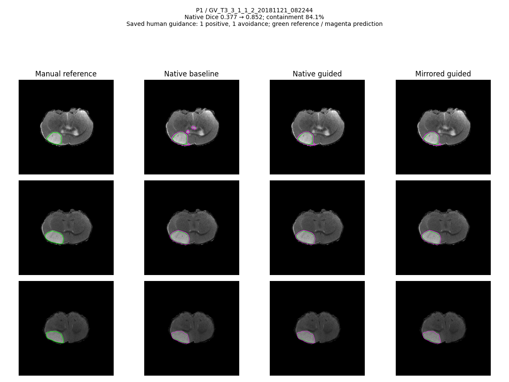
GV_T3_3_2_1_2_20181121_091427
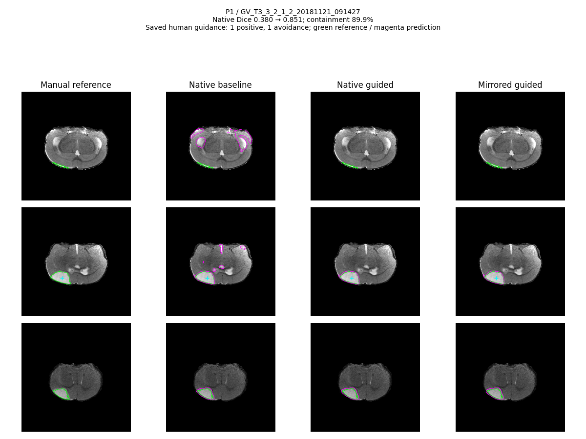
GV_T3_3_3_1_2_20181121_102307
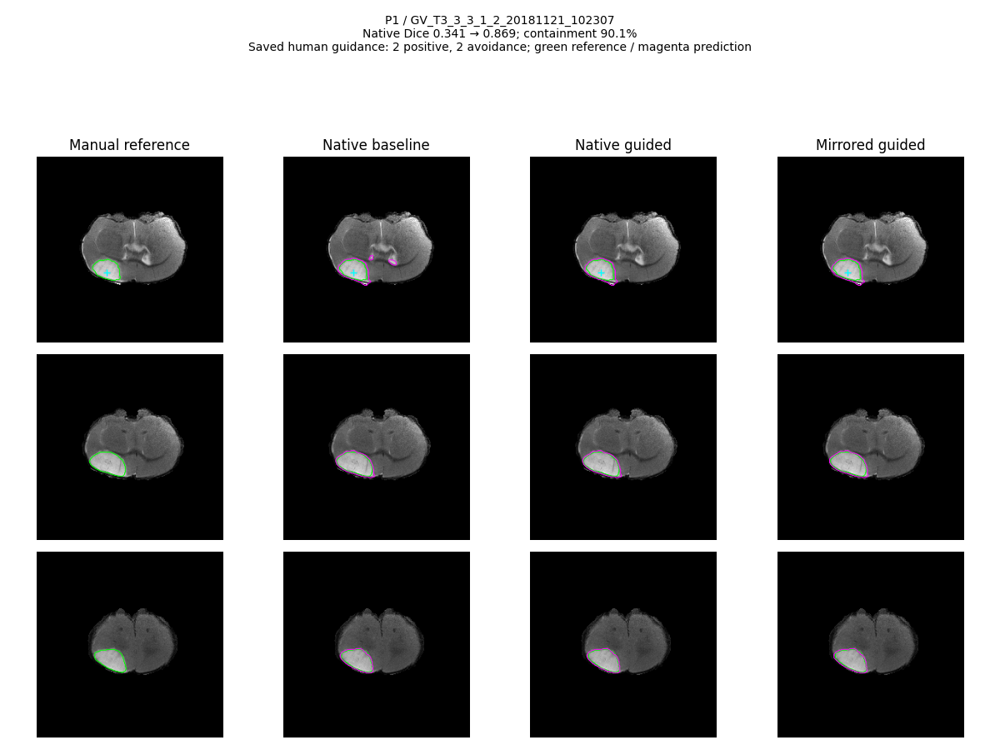
GV_T3_4_1_1_3_20181121_125526
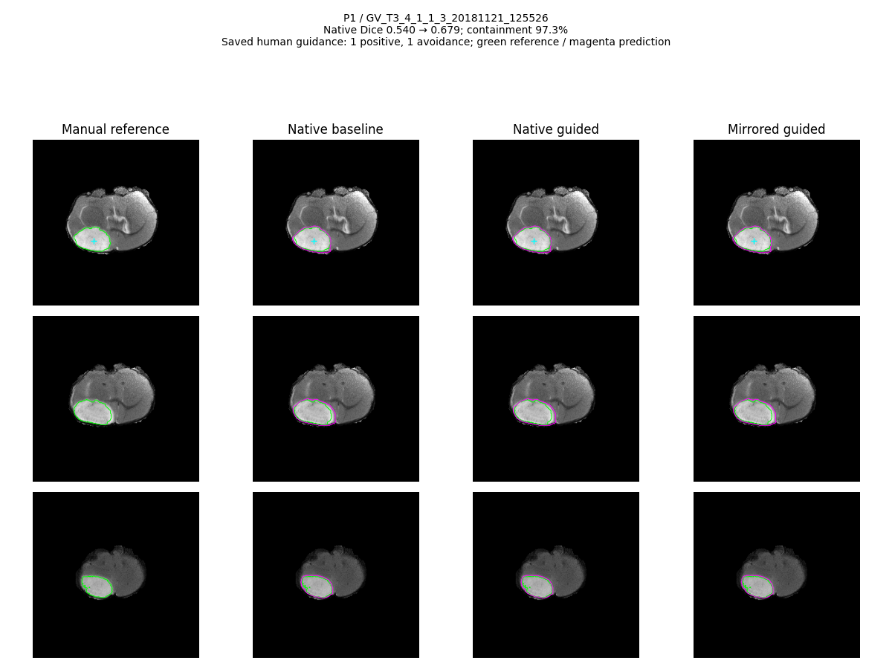
GV_T3_4_2_1_2_20181121_133734
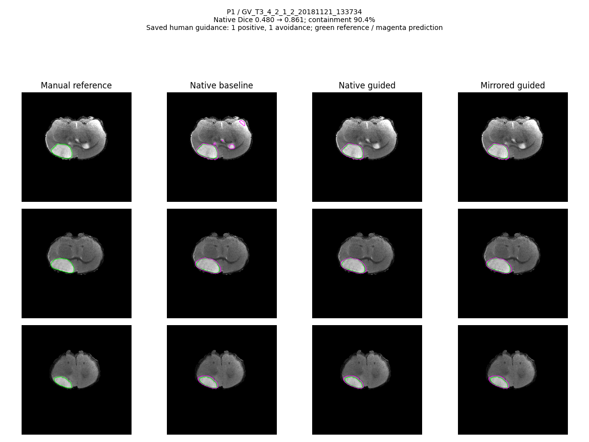
GV_T3_4_3_1_2_20181121_143641
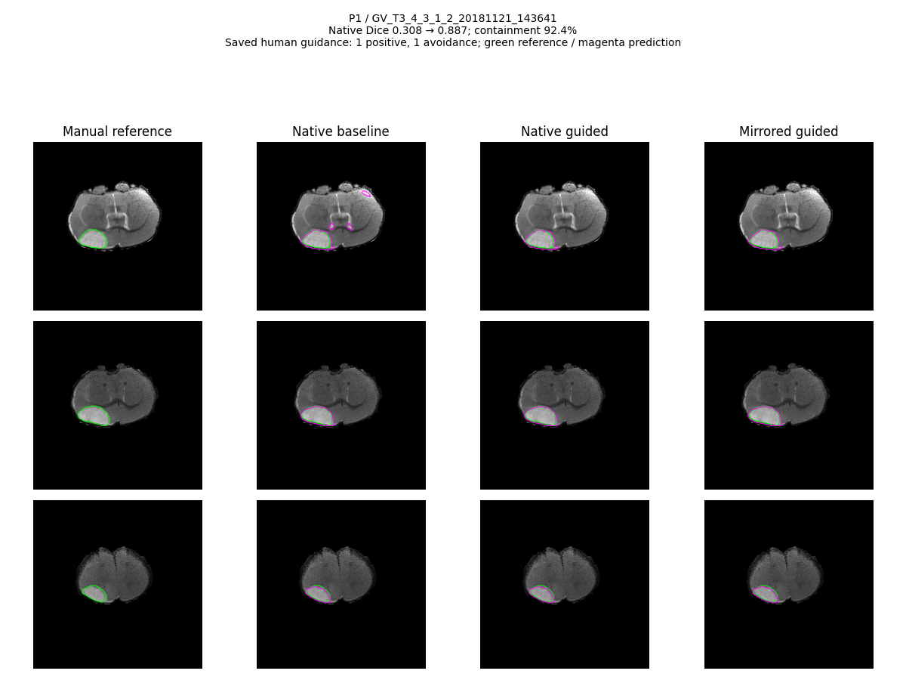
GV_T3_8_2_1_2_20190206_092529
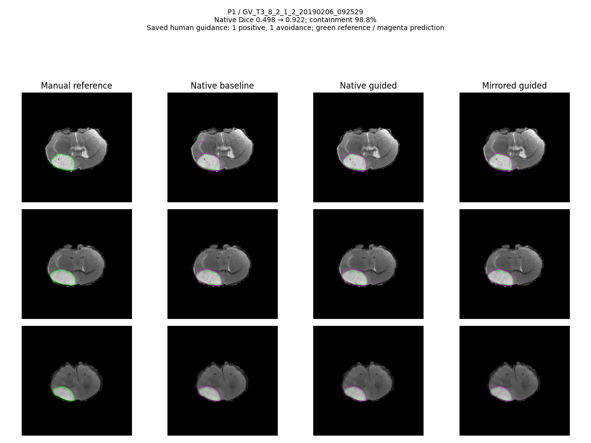
GV_T3_8_4_1_2_20190206_104319
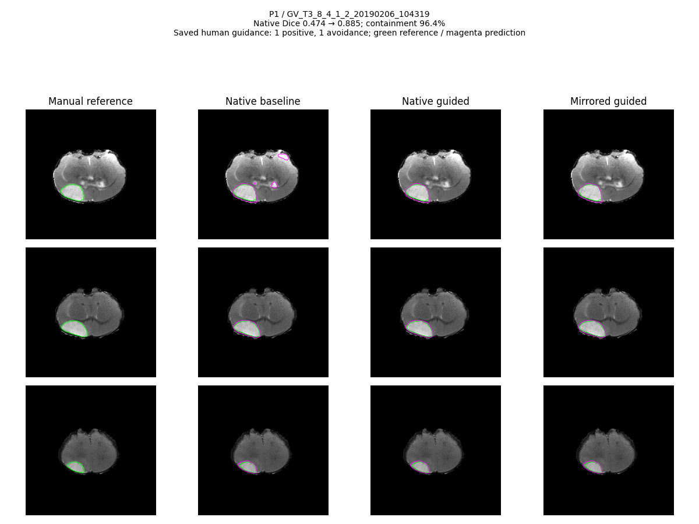
GV_T3_9_1_1_2_20190206_112248
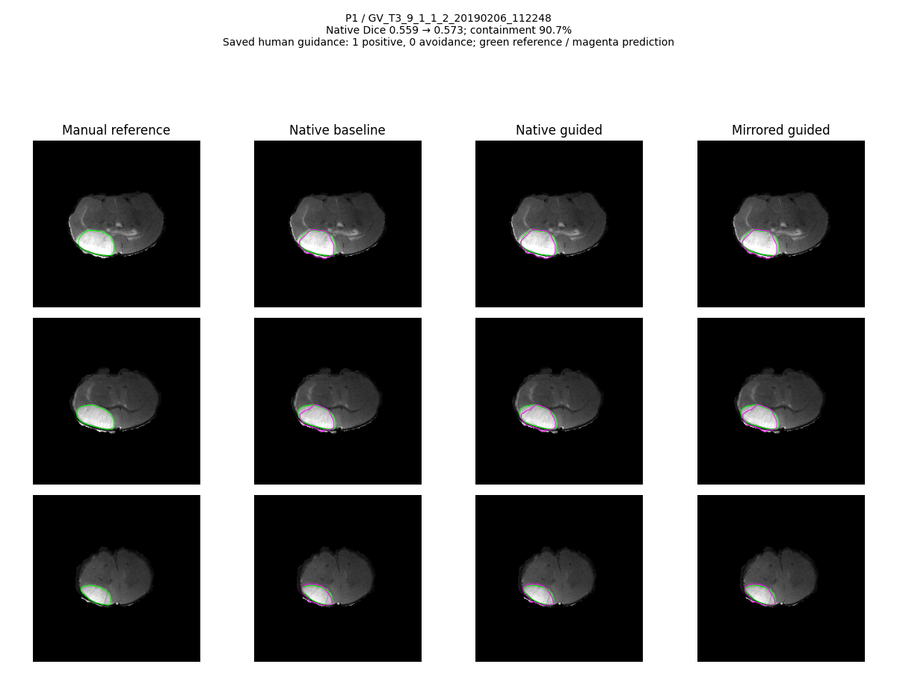
GV_T3_9_3_1_2_20190206_130351
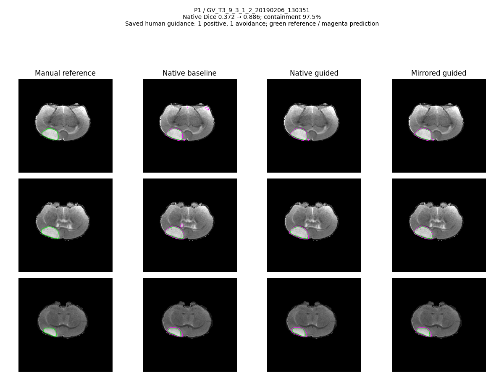
SP_V1_2_1_1_1_20171013_144832
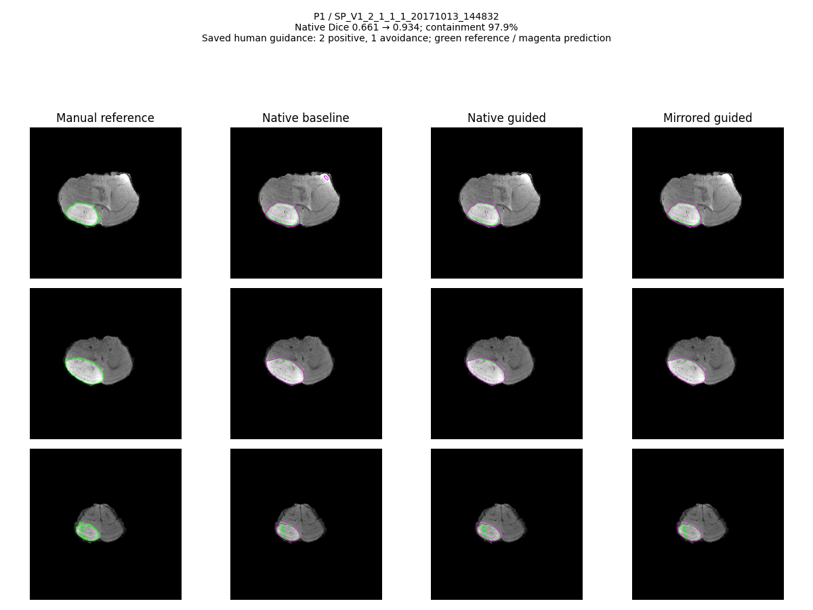